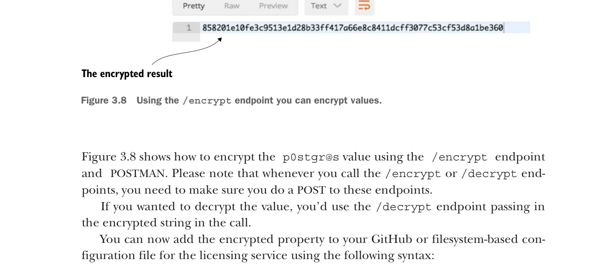

Dùng endpoint /encrypt, bạn có thể mã hóa các giá trị.
Hình 3.8 cho thấy cách mã hóa giá trị p0stgr@s bằng endpoint /encrypt và POSTMAN. Lưu ý rằng mỗi khi gọi các endpoint /encrypt hoặc /decrypt, bạn cần đảm bảo thực hiện POST tới các endpoint này.
Nếu bạn muốn giải mã giá trị, hãy dùng endpoint /decrypt và truyền chuỗi đã mã hóa trong lời gọi.
Giờ bạn có thể thêm thuộc tính đã mã hóa vào tệp cấu hình trên GitHub hoặc dựa trên hệ thống tệp cho licensing service bằng cú pháp sau:
spring.datasource.password:"{cipher}
858201e10fe3c9513e1d28b33ff417a66e8c8411dcff3077c53cf53d8a1be360"Máy chủ cấu hình Spring Cloud yêu cầu tất cả các thuộc tính đã mã hóa phải được thêm tiền tố giá trị {cipher}. Giá trị {cipher} cho máy chủ cấu hình Spring Cloud biết rằng đây là giá trị đã mã hóa. Hãy khởi động máy chủ cấu hình Spring Cloud của bạn và gọi endpoint GET http://localhost:8888/licensingservice/default.
Hình 3.9 cho thấy kết quả của lời gọi này.
Bạn đã làm cho spring.datasource.password an toàn hơn bằng cách mã hóa thuộc tính, nhưng vẫn còn một vấn đề. Mật khẩu cơ sở dữ liệu vẫn bị lộ dưới dạng văn bản thuần khi bạn gọi endpoint http://localhost:8888/licensingservice/default.